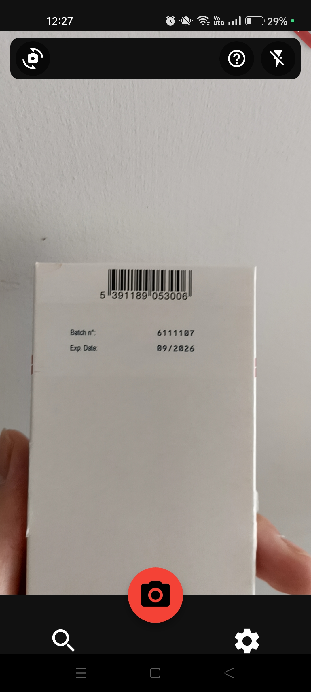
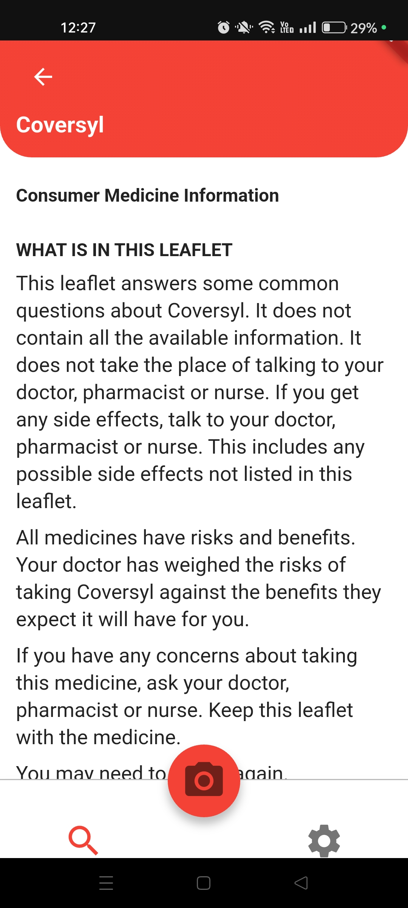
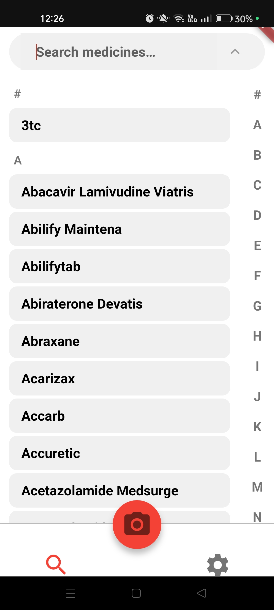
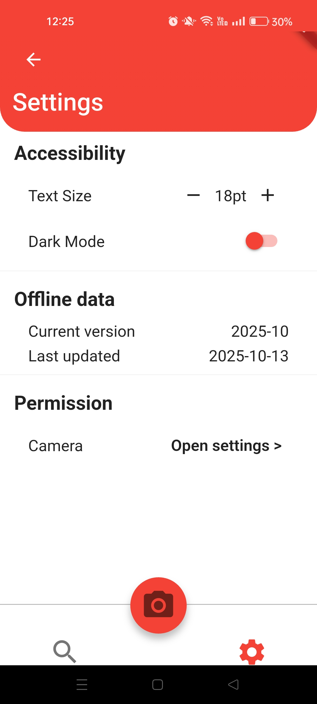

Meddy




Key Features
- Barcode scanning for medicine lookup
- Search functionality for prescription medicines
- Various accessiblity settings such as custom text size and text-to-speech
- Data sourced from official NZ medicine databases
Technologies Used
Frontend: Flutter (Dart)
Backend/Data: Python
❮
 ❯
❯